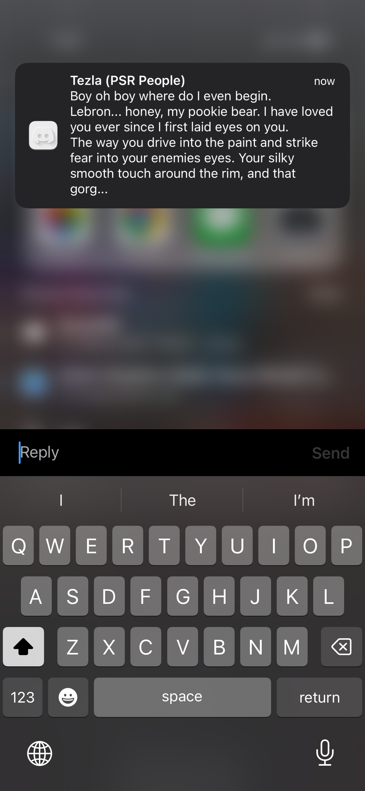
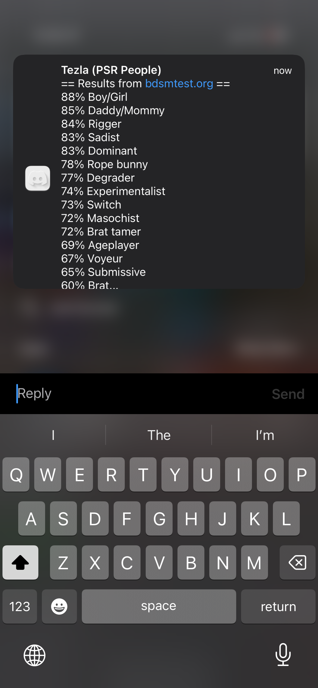
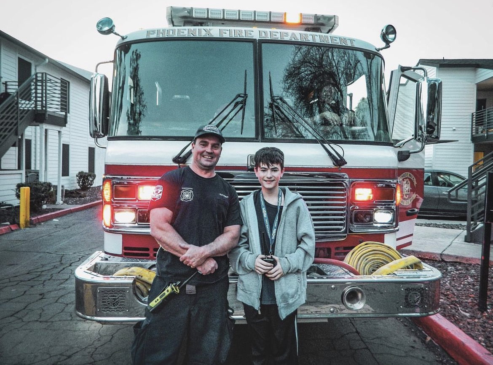
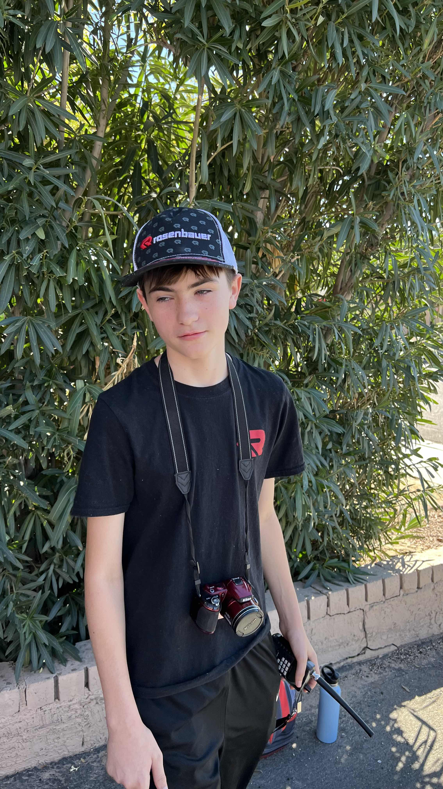
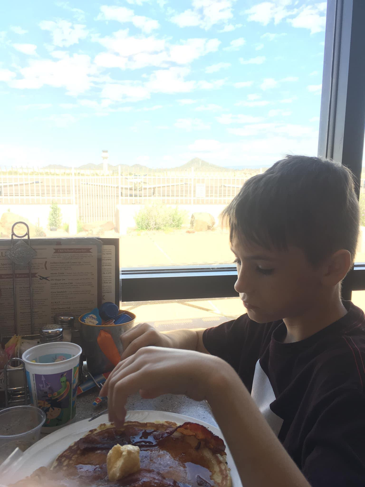

Conner explaining why he needs LeBron James as his boyfriend

Conner confused about his sexuality
Conner Likes gay stuff
What is conner?

Conner is a fireman who looks like he is in a movie that takes place in 1957
Conner as a trans firewoman

Conner staring at a firetruck

Conner taking an image, cause he's a pookie

Little connie eating food
I'm so funny